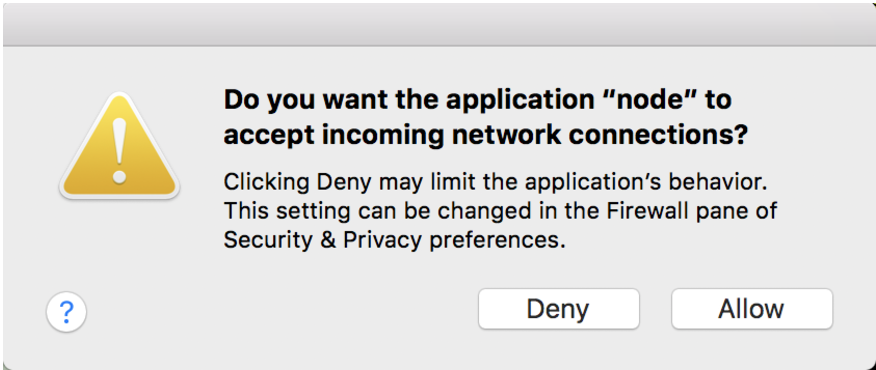
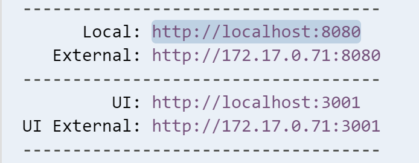

Part 5: Preview your app
Now, let’s run a Node.js web server to preview our app.
Cloud9 users, check the bottom for some special instructions.
In CLI, type:
npm run serveWhen you run the
npm run servecommand, you may receive a prompt similar to this:
Select Allow.
Go to localhost:3000 in your browser.
- When you run the
npm run servecommand, you are telling Node to start a server that uses the http protocol to listen on port 3000. - Ports are communication endpoints that exist between operating systems.
- Port 3000 is a local port, so a web server listening on that port will only be available on your local system. You'd typically use ports 80 or 443 if you wanted to publish a site to the Internet.
- Once you're ready to stop your http server, you can press keys Ctrl+C together, to cancel out of your command.
Cloud9 only listens for a few ports: 8080, 8081 & 8082. By default, the fountain webapp generator settings use 3000, so we need to update those settings.
In the mytodo folder, there is a conf folder [short for config], click on the arrow to expand the conf folder.
Open the browsersync.conf.js file in the editor. We need to add
port: '8080'to this file. Below is how we want the file to look. For simplicity, you can replace the whole file's contents by copying the below code with the Copy button and pasting it over the contents of the browsersync.conf.js file.const conf = require('./gulp.conf'); module.exports = function () { return { server: { baseDir: [ conf.paths.tmp, conf.paths.src ] }, open: false, port: '8080' }; };Now, you're ready to type
npm run servein the terminal. In the output, you'll see something like this:
Click on
http://localhost:8080& select Open from the menu. Your working app should open in a new browser window! Cheers!